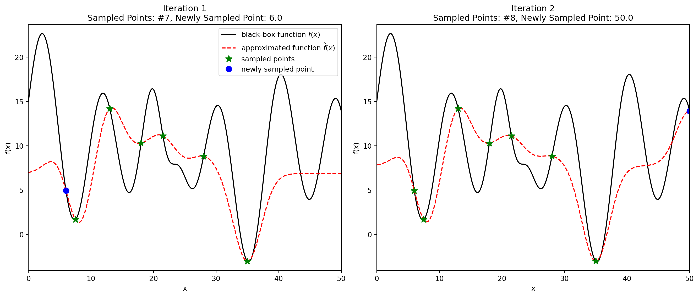

Understanding Kernels in Bayesian Optimization: A Step-by-Step Guide
import numpy as npimport matplotlib.pyplot as pltfrom sklearn.gaussian_process import GaussianProcessRegressorfrom sklearn.gaussian_process.kernels import RBF, WhiteKernel# 1. Define the "Unknown" Black-Box Function# (This is just an example function that looks somewhat like the one in the image)def black_box_function(x):"""The true function we want to optimize but don't know."""# Combining sines for complexityreturn (np.sin(x /1.5) *8+ np.cos(x /3.5) *5+ np.sin(x /10) *3+10+# Adding a sharp dip like in the image-15* np.exp(-0.5* ((x -22) /1.5)**2))# Define the domain for plottingX_plot = np.linspace(0, 50, 500).reshape(-1, 1)y_true = black_box_function(X_plot)# --- Iteration 1 Data ---# Based on image: 6 previous points + 1 new point at x=6.0# Let's pick some plausible points visually for the initial 6 green starsX_train_iter1 = np.array([7.5, 13.0, 18.0, 21.5, 28.0, 35.0, 6.0]).reshape(-1, 1)Y_train_iter1 = black_box_function(X_train_iter1).ravel()# --- Iteration 2 Data ---# Based on image: Adds a new point at x=50.0 to the previous 7 pointsX_train_iter2 = np.vstack((X_train_iter1, np.array([[50.0]])))Y_train_iter2 = black_box_function(X_train_iter2).ravel()# 2. Setup Gaussian Process Regressor# Kernel definition: RBF for smoothness + WhiteKernel for noise/tolerancekernel =1.0* RBF(length_scale=5.0, length_scale_bounds=(1e-1, 10.0)) \+ WhiteKernel(noise_level=0.5, noise_level_bounds=(1e-5, 1e+1))gp = GaussianProcessRegressor(kernel=kernel, alpha=0.0, # Assuming no observation noise is added externally n_restarts_optimizer=10, # Helps find better kernel parameters normalize_y=True) # Normalizing target values often helps# Function to create the plotdef plot_gp_iteration(ax, iteration, X_train, Y_train, gp_model, X_plot, y_true):"""Plots a single iteration of the Bayesian Optimization process."""# Separate old points (stars) and the latest point (dot) X_old = X_train[:-1] Y_old = Y_train[:-1] X_new = X_train[-1:] Y_new = Y_train[-1:]# Fit the GP model to the current training data gp_model.fit(X_train, Y_train)# Predict using the fitted GP model y_pred, std_dev = gp_model.predict(X_plot, return_std=True)# Plot the true function ax.plot(X_plot, y_true, 'k-', label='black-box function $f(x)$')# Plot the GP prediction (mean) ax.plot(X_plot, y_pred, 'r--', label='approximated function $\\hat{f}(x)$')# Plot the confidence interval (optional, but common in BO plots)# ax.fill_between(X_plot.ravel(), y_pred - 1.96 * std_dev, y_pred + 1.96 * std_dev,# alpha=0.2, color='red', label='95% confidence interval')# Plot previously sampled points ax.plot(X_old, Y_old, 'g*', markersize=10, label='sampled points')# Plot the newly sampled point ax.plot(X_new, Y_new, 'bo', markersize=8, label='newly sampled point')# Formatting ax.set_xlabel("x") ax.set_ylabel("f(x)") ax.set_title(f"Iteration {iteration}\nSampled Points: #{len(X_train)}, Newly Sampled Point: {X_new[0,0]:.1f}") ax.set_ylim(min(y_true)-1, max(y_true)+1) # Adjust Y limits ax.set_xlim(X_plot.min(), X_plot.max()) # Adjust X limitsif iteration ==1: # Only add legend to the first plot for clarity ax.legend(loc='upper right')# 3. Create the plots for both iterationsfig, axes = plt.subplots(1, 2, figsize=(14, 6)) # Create a figure with two subplots# Plot Iteration 1plot_gp_iteration(axes[0], 1, X_train_iter1, Y_train_iter1, gp, X_plot, y_true)# Plot Iteration 2# Important: Use a *new* GP instance or ensure the state isn't carried over if not desired.# Here, the same 'gp' instance is refitted, which is standard practice.plot_gp_iteration(axes[1], 2, X_train_iter2, Y_train_iter2, gp, X_plot, y_true)plt.tight_layout() # Adjust subplot parameters for a tight layoutplt.show()
/Library/Frameworks/Python.framework/Versions/3.12/lib/python3.12/site-packages/sklearn/gaussian_process/kernels.py:445: ConvergenceWarning:
The optimal value found for dimension 0 of parameter k2__noise_level is close to the specified lower bound 1e-05. Decreasing the bound and calling fit again may find a better value.
/Library/Frameworks/Python.framework/Versions/3.12/lib/python3.12/site-packages/sklearn/gaussian_process/kernels.py:445: ConvergenceWarning:
The optimal value found for dimension 0 of parameter k2__noise_level is close to the specified lower bound 1e-05. Decreasing the bound and calling fit again may find a better value.

In Bayesian Optimization, we use a Gaussian Process (GP) to create a probabilistic model (the “surrogate model” or “approximation,” like the red dotted line in our example) of the unknown black-box function (the black line). The kernel is the core component that defines the assumptions this model makes about the function.
Step 1: The Goal - Modeling the Unknown
Before diving into kernels, let’s remember why we need the GP surrogate model. We have a few samples \((x, y)\) from our expensive-to-evaluate black-box function \(f(x)\). We want to:
Approximate\(f(x)\) over the entire input space, even where we haven’t sampled.
Quantify our uncertainty about this approximation. (How confident are we about the red line’s height at any given \(x\)?)
The GP achieves this by assuming that function values at “nearby” input points are related or correlated. The kernel tells us exactly how related they are.
Step 2: The Kernel - A Measure of Similarity
Think of the kernel, often written as \(k(x_1, x_2)\), as a function that measures the similarity or covariance between the function’s output values at two different input points, \(x_1\) and \(x_2\).
Input: Two points from the input domain (e.g., \(x_1 = 10\), \(x_2 = 12\)).
Output: A single number representing the expected relationship between \(f(x_1)\) and \(f(x_2)\).
A high kernel value means \(f(x_1)\) and \(f(x_2)\) are expected to be strongly related (highly correlated). If we know \(f(x_1)\), we have a good idea about \(f(x_2)\). This usually happens when \(x_1\) and \(x_2\) are “close”.
A low kernel value (close to zero) means \(f(x_1)\) and \(f(x_2)\) are expected to be weakly related (uncorrelated). Knowing \(f(x_1)\) tells us little about \(f(x_2)\). This usually happens when \(x_1\) and \(x_2\) are “far apart”.
The fundamental assumption encoded by the kernel is: The closer two input points \(x_1\) and \(x_2\) are (according to the kernel’s definition of closeness), the more similar their output values \(f(x_1)\) and \(f(x_2)\) should be.
Step 3: How Kernels Work - The RBF Example
Different mathematical functions can serve as kernels, each encoding different assumptions about the underlying function (e.g., smoothness, periodicity). The most widely used kernel is the Radial Basis Function (RBF) kernel, also known as the Squared Exponential or Gaussian kernel.
Its formula is: \(k_{RBF}(x_1, x_2) = \sigma^2 \exp\left( - \frac{\|x_1 - x_2\|^2}{2l^2} \right)\)
Let’s dissect this:
\(\|x_1 - x_2\|^2\): This is the squared Euclidean distance between the input points \(x_1\) and \(x_2\). For our 1D example, it’s simply \((x_1 - x_2)^2\). If \(x_1\) and \(x_2\) were 2D points \((x_{1a}, x_{1b})\) and \((x_{2a}, x_{2b})\), this would be \((x_{1a}-x_{2a})^2 + (x_{1b}-x_{2b})^2\).
\(l\): This is the length scale. It’s a crucial hyperparameter that controls how quickly the correlation decays as the distance between points increases.
A small length scale (\(l\)) means the correlation drops off very quickly. Only very close points are considered related. This implies the function is expected to change rapidly or be “wiggly”.
A large length scale (\(l\)) means the correlation drops off slowly. Points relatively far apart still influence each other. This implies the function is expected to be very “smooth” and change slowly.
\(\sigma^2\): This is the output variance (or signal variance). It’s another hyperparameter that controls the average expected deviation of the function values from their mean. It essentially scales the overall amplitude or vertical variation the model expects.
\(\exp(\dots)\): The exponential function ensures the similarity is highest (equal to \(\sigma^2\)) when \(x_1 = x_2\) (distance is 0) and decays smoothly towards 0 as the distance grows.
Python Code: Visualizing the RBF Kernel’s Similarity Decay
The code below shows how the RBF kernel value (similarity) changes as one point (\(x_2\)) moves away from a fixed point (\(x_1=0\)) for different length scales.
import numpy as npimport matplotlib.pyplot as pltdef rbf_kernel(x1, x2, length_scale, variance):""" Calculates the Radial Basis Function (RBF) kernel value between two points. Args: x1: First input point (scalar or numpy array). x2: Second input point (scalar or numpy array). length_scale: The length scale parameter (l). Controls smoothness. variance: The variance parameter (sigma^2). Controls amplitude. Returns: The kernel value (similarity). """# Calculate squared Euclidean distance# np.sum works for both 1D and multi-dimensional inputs distance_sq = np.sum((np.asarray(x1) - np.asarray(x2))**2)# Calculate RBF kernel valuereturn variance * np.exp(-0.5* distance_sq / length_scale**2)# --- Simulation Setup ---# Fix one point, e.g., x1 = 0x1_fixed = np.array([0.0])# Create a range of other points (x2) to compare against x1x2_values = np.linspace(-5, 5, 200).reshape(-1, 1) # Use reshape for consistency# Define kernel parametersvariance =1.0# Sigma^2 (often fixed at 1 initially, can be optimized later)# Define different length scales to comparelength_scales = {"Short (l=0.5)": 0.5,"Medium (l=1.0)": 1.0,"Long (l=3.0)": 3.0}# --- Calculate Kernel Values ---plt.figure(figsize=(10, 6))for label, l in length_scales.items():# Calculate similarity of each x2 with the fixed x1 similarities = [rbf_kernel(x1_fixed, x2, length_scale=l, variance=variance) for x2 in x2_values] plt.plot(x2_values, similarities, label=f'{label}')# --- Plotting ---plt.title(f'RBF Kernel Value (Similarity) vs. Input Point $x_2$ (relative to $x_1=0$)')plt.xlabel('$x_2$')plt.ylabel(f'$k(x_1=0, x_2)$ with $\sigma^2={variance}$')plt.axvline(x1_fixed[0], color='k', linestyle='--', linewidth=1.0, label=f'$x_1=0$') # Mark x1plt.legend()plt.grid(True, linestyle='--', alpha=0.6)plt.ylim(-0.05, 1.05) # Kernel value is between 0 and variance (here 1)plt.show()
Step 4: Building the Model - The Covariance Matrix
The GP uses the chosen kernel function \(k(x_i, x_j)\) to build a covariance matrix (\(K\)) using the set of already observed input points \(X_{train} = \{x_1, ..., x_n\}\).
Each entry \(K_{ij} = k(x_i, x_j)\) represents the assumed covariance (relatedness) between the function values \(f(x_i)\) and \(f(x_j)\). This matrix, along with the observed output values \(Y_{train} = \{y_1, ..., y_n\}\), forms the core of the GP model.
When predicting the function value at a new, unobserved point \(x_*\), the GP uses:
The kernel evaluations between \(x_*\) and all training points: \([k(x_*, x_1), k(x_*, x_2), ..., k(x_*, x_n)]\).
The kernel evaluation of \(x_*\) with itself: \(k(x_*, x_*)\).
The covariance matrix \(K\) of the training points.
The observed values \(Y_{train}\).
Through matrix operations involving these components, the GP calculates the predicted mean value \(\hat{f}(x_*)\) (the height of the red dotted line) and the variance (which gives the uncertainty or confidence interval) at \(x_*\). The prediction \(\hat{f}(x_*)\) is effectively a weighted average of the observed \(Y_{train}\) values, where the weights are determined by the kernel similarities.
Step 5: Application to Our Example - Shaping the Red Line
In the first Python code example we looked at, the kernel was defined as:
# From previous code:kernel =1.0* RBF(length_scale=5.0, ...) + WhiteKernel(noise_level=0.5, ...)
RBF(length_scale=5.0, ...): This specifies the RBF kernel. The initial length_scale=5.0 sets the assumption about the function’s smoothness. A value of 5.0 suggests that points within roughly 5 units of each other have significantly correlated outputs. This value influences how smooth or wiggly the resulting red dotted line is. (Note: scikit-learn’s GaussianProcessRegressor often optimizes these hyperparameters like length_scale during the .fit() process unless told not to).
1.0 * ...: This is the output variance \(\sigma^2\). It scales the amplitude.
+ WhiteKernel(...): This kernel adds a small amount to the diagonal of the covariance matrix (\(k(x_i, x_i)\)). It represents observation noise – the assumption that our measured \(y_i\) might not be exactly\(f(x_i)\) but rather \(f(x_i) + \epsilon_i\), where \(\epsilon_i\) is some noise. This helps stabilize the calculations and makes the model less sensitive to individual data points.
Python Code: Impact of Length Scale on the GP Fit
This code demonstrates how changing only the length_scale in the RBF kernel alters the shape of the fitted GP model (the red dotted line) using a few sample points.
import numpy as npimport matplotlib.pyplot as pltfrom sklearn.gaussian_process import GaussianProcessRegressorfrom sklearn.gaussian_process.kernels import RBF, WhiteKernel# --- Sample Data ---# Use a few points similar to the Iteration 1 scenario for illustrationX_train = np.array([6.0, 7.5, 13.0, 18.0, 21.5, 28.0, 35.0]).reshape(-1, 1)# Define a simple target function just for this illustration# (The GP doesn't know this function, it only sees X_train, Y_train)def simple_target_func(x):return np.sin(x/3.0)*5+ np.cos(x/1.5)*2+7-5* np.exp(-0.5* ((x -22) /2.5)**2)Y_train = simple_target_func(X_train).ravel()# Define the domain for plotting the GP predictionX_plot = np.linspace(0, 50, 300).reshape(-1, 1)# --- Kernels with different length scales ---# We also include a WhiteKernel for numerical stability/noise modellingkernels_to_test = {"Short (l=1.0)": 1.0* RBF(length_scale=1.0, length_scale_bounds="fixed") + WhiteKernel(noise_level=0.1, noise_level_bounds="fixed"),"Medium (l=5.0)": 1.0* RBF(length_scale=5.0, length_scale_bounds="fixed") + WhiteKernel(noise_level=0.1, noise_level_bounds="fixed"),"Long (l=15.0)": 1.0* RBF(length_scale=15.0, length_scale_bounds="fixed") + WhiteKernel(noise_level=0.1, noise_level_bounds="fixed")}# Note: "fixed" prevents the GP from optimizing the hyperparameters, so we see the direct effect.# --- Plotting ---plt.figure(figsize=(12, 7))# Plot the training data pointsplt.plot(X_train, Y_train, 'g*', markersize=12, label='Sampled Points (Training Data)')# Plot the true underlying function for reference (GP doesn't see this)# plt.plot(X_plot, simple_target_func(X_plot), 'k-', alpha=0.3, linewidth=1.5, label='True Underlying Function (Unknown to GP)')# Fit GP and plot prediction for each kernelfor name, kernel in kernels_to_test.items():# Instantiate the Gaussian Process Regressor# alpha=1e-10 adds a tiny value to the diagonal for numerical stability gp = GaussianProcessRegressor(kernel=kernel, alpha=1e-10, optimizer=None, # Explicitly disable optimizer normalize_y=False) # Keep simple for illustration# Fit the GP model to the training data gp.fit(X_train, Y_train)# Predict mean and standard deviation over the plotting domain y_pred, std_dev = gp.predict(X_plot, return_std=True)# Plot the GP mean prediction (the surrogate model) plt.plot(X_plot, y_pred, linestyle='--', label=f'GP Mean Fit ({name})')# Plot the uncertainty (e.g., +/- 1 standard deviation) plt.fill_between(X_plot.ravel(), y_pred - std_dev, y_pred + std_dev, alpha=0.15, label=f'_nolabel_') # Underscore hides from legendplt.title('Impact of RBF Kernel Length Scale ($l$) on Gaussian Process Fit')plt.xlabel('Input $x$')plt.ylabel('Output $f(x)$')plt.legend(loc='upper left')plt.ylim(min(Y_train)-5, max(Y_train)+5) # Adjust y-limits based on dataplt.grid(True, linestyle='--', alpha=0.6)plt.show()
Summary
The kernel is the component of a Gaussian Process that encodes our prior beliefs about the function we are modeling, specifically:
Similarity: How related are the function outputs for given inputs?
Smoothness: How rapidly do we expect the function to change? (Controlled mainly by the length scale \(l\)).
Amplitude: What is the expected range of function values? (Controlled by the output variance \(\sigma^2\)).
Choosing a kernel and its hyperparameters (or letting the GP optimize them) fundamentally shapes the surrogate model (the red dotted line) and, consequently, influences how Bayesian Optimization explores the search space.